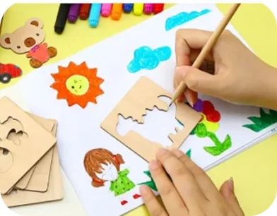
- Teaches basic shapes and forms
- Simple, low-cost
- Limited to pre-made shapes
- Kids outgrow it quickly
A Built-it-Yourself drawing toy that helps kids draw.
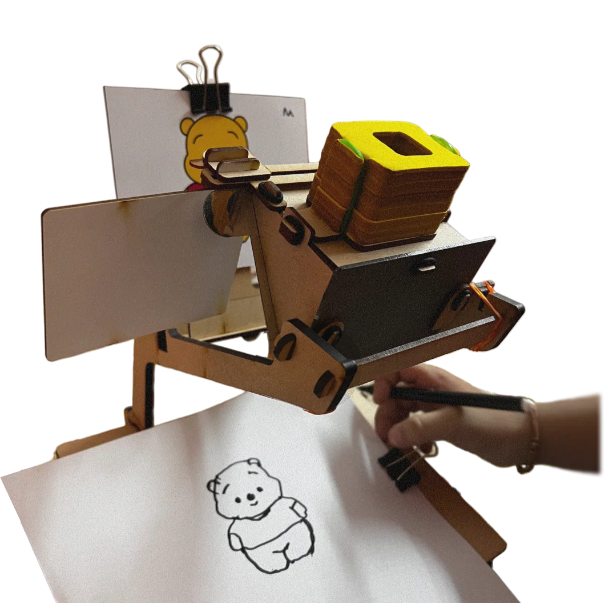
Design a toy, built from Smartivity's existing material and manufacturing vocabulary, that helps children develop sketching and drawing skills through play.
I started with what kids want when they draw. Then I mapped what's already on the market spirographs, stencil kits, tactile drawing tools..etc.
The pattern: kids stayed engaged longest with toys that produced something visible through their own motion, not a fixed template.

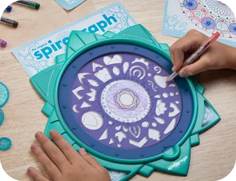
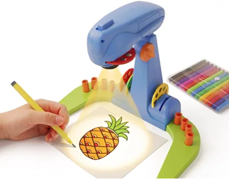
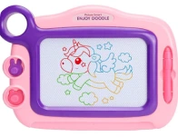
I chose an optics-based mechanism over gears or motors. No battery, safer, cheaper, fully hands-on. Optics is also a real STEM topic, so the toy teaches something true while it helps kids draw. That fit Smartivity's STEM identity better than a plain mechanical option.
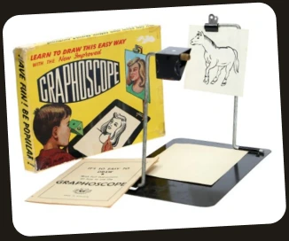
I started by getting the mechanism right proving the Camera Obscura principle could work in a toy form factor before designing anything around it.
Built early prototypes purely to test one thing, Could the mechanism actually be used to draw something?. Confirmed it worked.
PROTOTYPES 0 → V
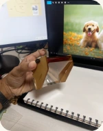
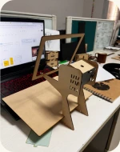
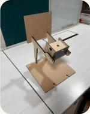
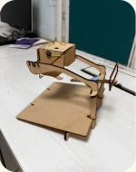
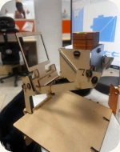
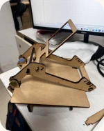
6 rounds of MDF, rubberbands & tiny fixes
Refined the prototype and ran user testing with kids. Kids could draw with it. Collected feedback through interviews kids and parents both.
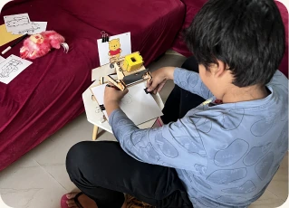
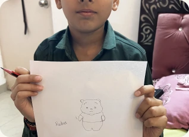
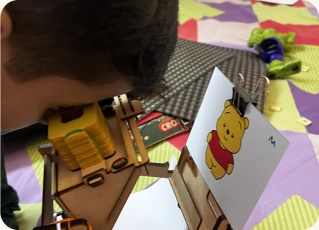
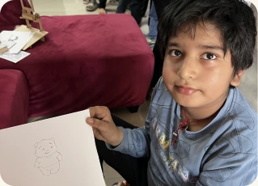
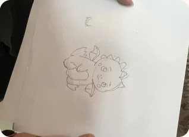
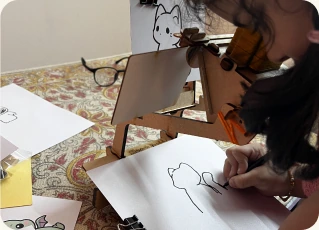
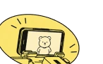
or phone!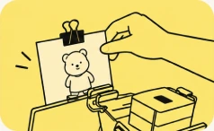
Place the picture card on the stand
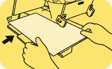
Place the paper below
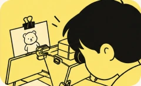
Look through the eye piece
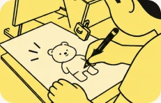
Draw through the outline
Positive feedback from kids and parents across both rounds of testing helped the project win sales approval.
Handed off to a senior designer for final design and production, continued giving feedback through that process. Product launched with the mechanism and concept carried through, form changed under the new design pass.
live on Amazon ↓
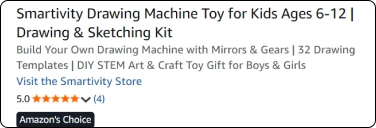
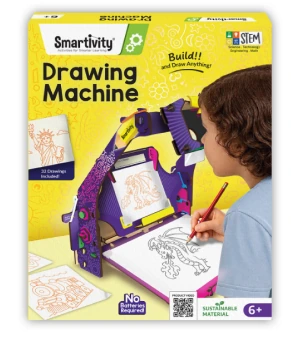
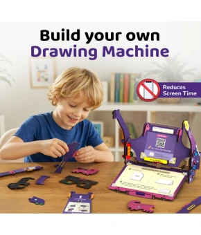
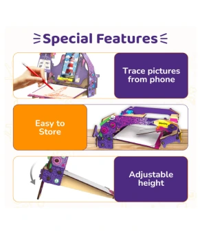